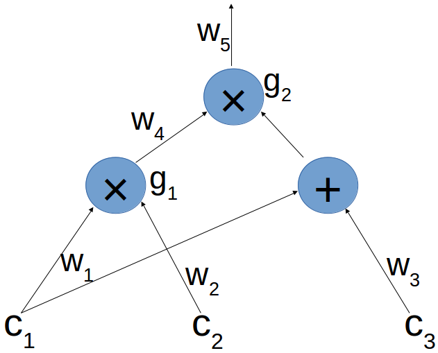

Construct zk-SNARKS Step by Step
lambda, ThunderDB
zeqing.guo@thunderdb.io
March, 2018
Verifiability of Blind Evaluation of Polynomial
Verifiability: the probability that Alice sends a value not of the form \(E(P(s))\) for \(P\) of degree \(d\) that is known to her, but Bob still accepts - is negligible
Assume that our homomorphic encryption is the mapping \(E(x) = x \cdot g\) for a generator \(g\) of G as above. We present the protocol for verifiable blind evaluation
- Bob chooses a random \(\alpha \in \mathbb{F}^*_p\), and sends to Alice the hidings \(g, s \cdot g, \cdots, s^d \cdot g\) (of \(1, s, \cdots, s^d\)) and also the hidings \(\alpha \cdot g, \alpha s \cdot g, \cdots, \alpha s^d \cdot g\)
- Alice computes \(a = P(s) \cdot g\) and \(b = \alpha P(s) \cdot g\) using the elements sent in the first step, and sends both to Bob
- Bob checks that \(b = \alpha \cdot a\), and accepts if and only if this equality holds
From Computations to Polynomials
Suppose Alice wants to prove Bob she knows \(c_1, c_2, c_3 \in \mathbb{F}_p\) such that \((c_1 \cdot c_2) \cdot (c_1 + c_3) = 7\)

- Present the expression computed from \(c_1, c_2, c_3\) as an arithmetic circuit:
- When the same outgoing wire goes into more than one gate, we still think of it as one wire - like \(w_1\) in the example
- We assume multiplication gates have exactly two input wires, which we call the left wire and right wire
- We don’t label the wires going from an addition to multiplication gate, nor the addition gate; we think of the inputs of the addition gate as going directly into the multiplication gate. So in the example we think of \(w_1\) and \(w_3\) as both being right inputs of \(g_2\)
- A legal assignment for the circuit, is an assignment of values to the labeled wires where the output value of each multiplication gate is indeed the product of the corresponding inputs
- So for our circuit, a legal assignment is of the form: \((c_1, \cdots, c_5)\) where \(c_4 = c_1 \cdot c_2\) and \(c_5 = c_4 \cdot (c_1 + c_3)\)
The Pinocchio Protocol
- A simple Pinocchio protocol
- Alice chooses polynomials \(L, R, O, H\) of degree at most \(d\)
- Bob chooses a random point \(s \in \mathbb{F}_p\), and computes \(E(T(s))\).
- Alice sends Bob the hidings of all these polynomials evaluated at \(s\), i.e. \(E(L(s)), E(R(s)), E(O(s)), E(H(s))\)
- Bob checks if the desired equation holds at \(s\). That is, he checks whether \(E(L(s) \cdot R(s) - O(s)) = E(T(s) \cdot H(s))\)
- The complete Pinocchio protocol: hiding \(E(L(s)), E(R(s)), E(O(s)), E(H(s))\)
- Alice will conceal her assignment in step 1 by adding a “random T-shift” \(\theta_1, theta_2, theta_3 \in \mathbb{F}^*_p\) to each polynomial
So we have: \(L_z:=L+\delta_1 \cdot T, R_z:=R+\delta_2\cdot T, O_z:=O+\delta_3\cdot T\)
And
\[
\begin{align*}
L_z \cdot R_z - O_z & = (L + \delta_1 \cdot T)(R+\delta_2 \cdot T) - O - \delta_3 \cdot T\\
& = (L \cdot R - O) + L \cdot \delta_2 \cdot T + \delta_1 \cdot T \cdot R + \delta_1\delta_2\cdot T^2 - \delta_3 \cdot T \\
& = T \cdot (H + L \cdot \delta_2 + \delta_1 \cdot R + \delta_1 \delta_2 \cdot T - \delta_3)\\
& = T \cdot H_z
\end{align*}
\]